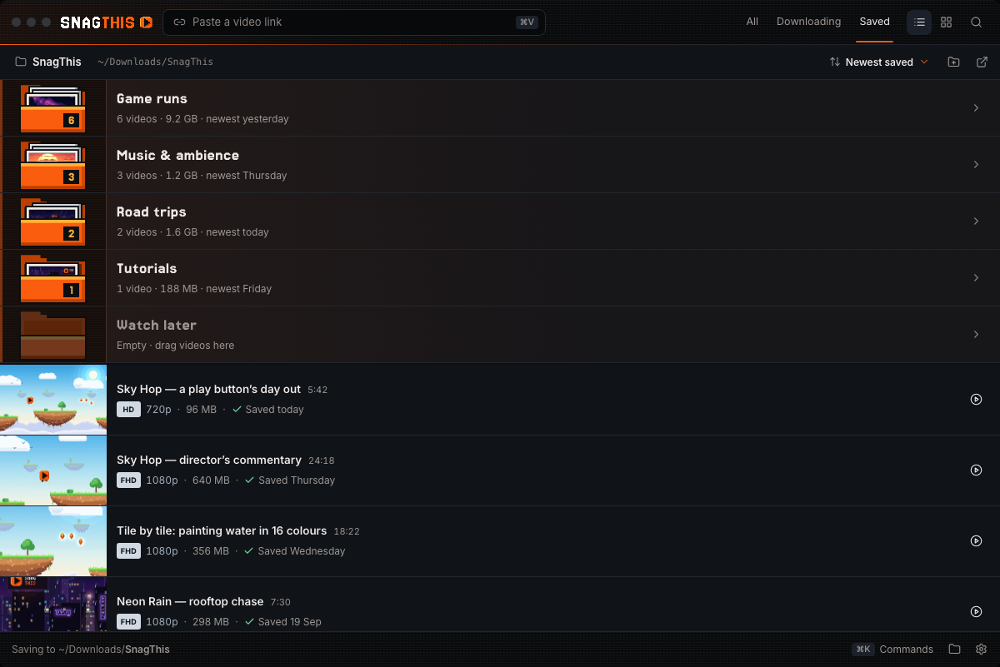
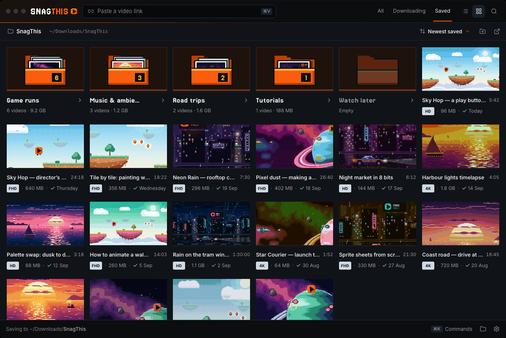
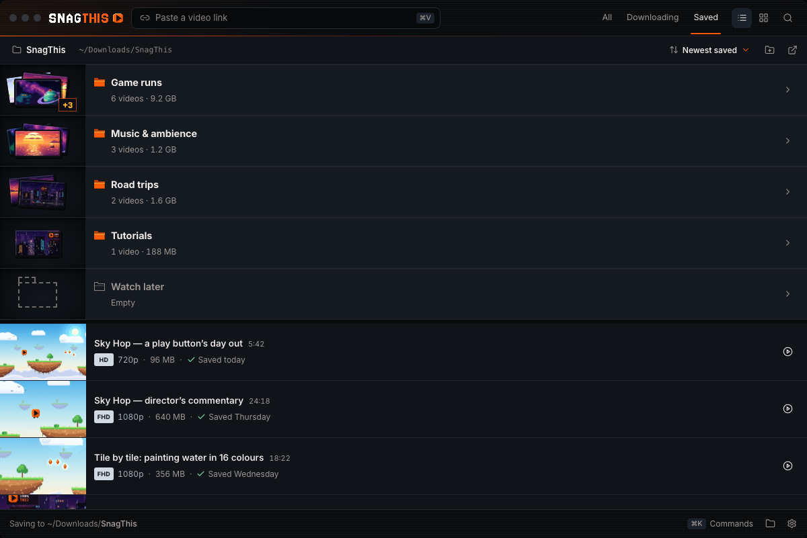
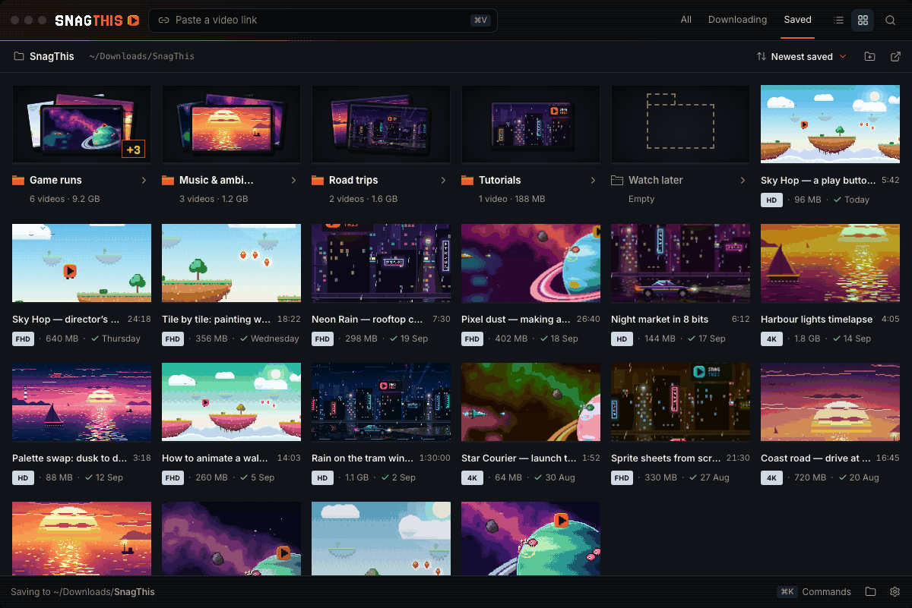
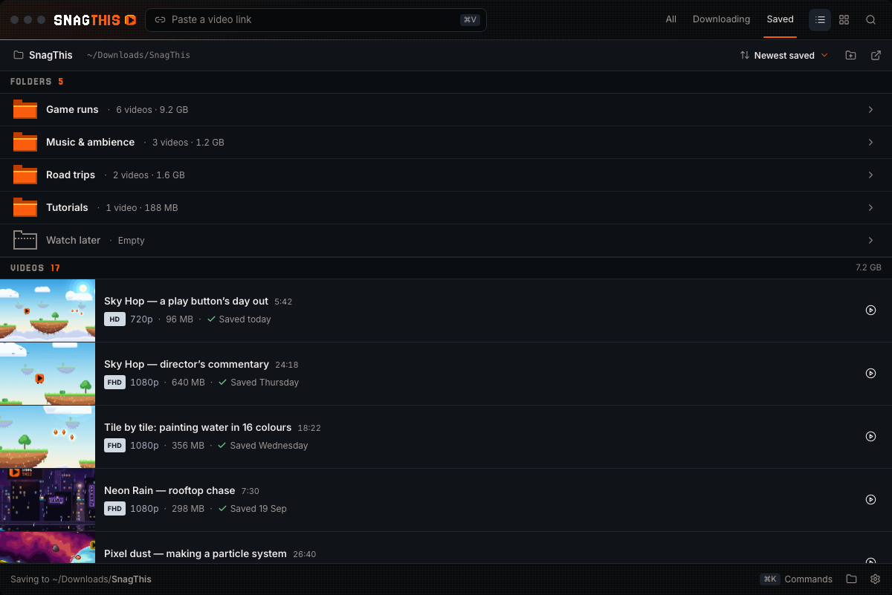
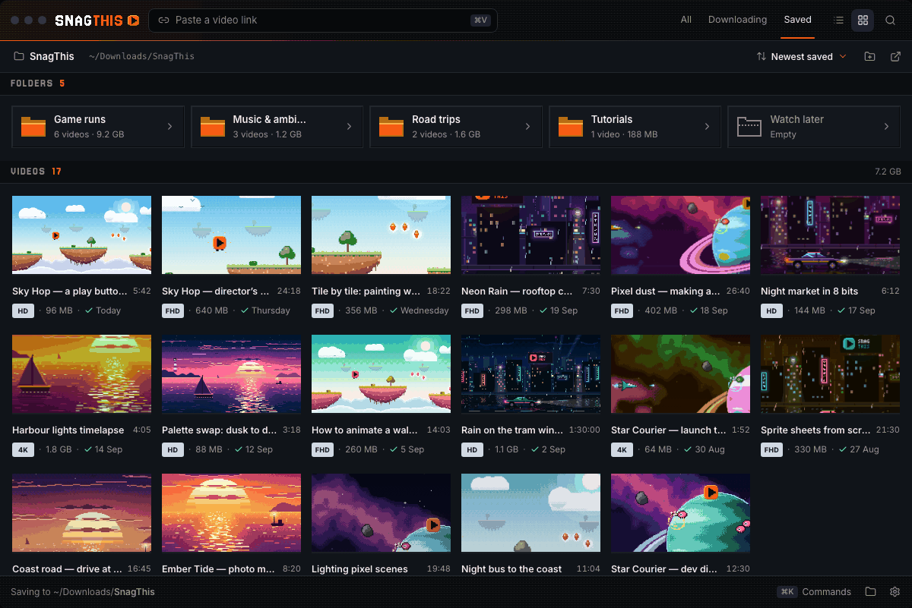
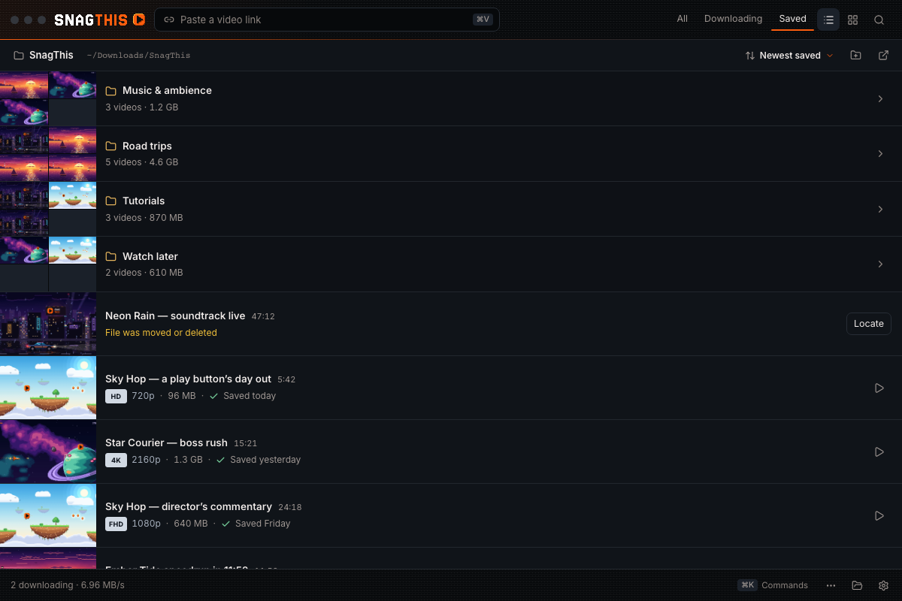

Make folders look like folders
Owner feedback: “the folder gallery shows 4 grid of images by default, but what if have less? looks odd. prolly want a folder stand out more from how it looks if you are looking at video row. As they look very identical.” Each option below shows the same Saved folder: folders of 0, 1, 2, 3 and 6 videos above loose videos, in the list and the shelf, with hover, drag-over (drop target) and keyboard focus. Open one to click through its states (keys 1–8), drag a real video onto a folder to watch it go 0 → 1 → 2 → …, Tab through the rows, switch list ⇄ shelf in the window, and try other accents.
Pixel folder
Open →A bevelled pixel-art folder in the accent colour, the newest poster peeking out, sheets behind for more, and a count badge. Shorter tinted row, permanent accent rail, name in the pixel font.


- Best for the loudest, most on-brand “this is a folder”.
- Cost: shows one poster only; many folders make a lot of accent.
States: hover · drag-over · focus · shelf hover · shelf drag-over · shelf focus


Adaptive stack
Open →Posters become framed cards on a sunken tray: 1 card, 2 offset, 3 stacked, then +N. Empty is a dashed pixel folder outline. Bold name with a pixel folder glyph on a raised row.


- Best for keeping “see what's inside” without blank tiles.
- Cost: closest to a video row in height; the difference is shape, not size.
States: hover · drag-over · focus · shelf hover · shelf drag-over · shelf focus


Sections · chosen
Open →File-manager style: compact 44px one-line rows under a FOLDERS label (pixel icon · name · count · size), no posters; videos follow under VIDEOS. Shelf: folder chips above the posters.


- Best for the clearest separation and the least height.
- Cost: no preview of contents; adds two section labels.
States: hover · drag-over · focus · shelf hover · shelf drag-over · shelf focus


Side by side
| A · Pixel folder | B · Adaptive stack | C · Sections | |
|---|---|---|---|
| Row height (video row 85px) | 68px | 76px | 44px |
| Left column | Accent pixel folder, newest poster peeking | 1–3 framed cards on a sunken tray, +N | None: 32px pixel folder icon inline |
| 0 videos | Hollow, greyed folder; “Empty · drag videos here” | Dashed pixel folder outline | Dotted outline icon; “Empty” |
| 1 / 2 / 3 videos | Poster; + 1 sheet; + 2 sheets; badge 1 / 2 / 3 | 1 card; 2 offset; 3 stacked | Same row; only the count changes |
| 4+ videos | Badge carries the number | 3 cards + pixel “+N” | Same row |
| Name | Jersey 15 pixel font | Inter bold + pixel folder glyph | Inter semibold, one line with count · size |
| Hover / focus | Poster lifts; rail full; 2px ring on focus | Cards fan wider; 2px ring on focus | Folder icon opens; 2px ring on focus |
| Drag-over | Front flap drops open, poster lifts, accent fill | Cards fan, dashed accent slot appears in front | Icon opens, accent ring, “Move here · path” |
| Shelf | Folder in a tinted 16:9 cubby, first in the grid | Stack on a 16:9 tray, first in the grid | FOLDERS chip grid, then VIDEOS posters |
Shared across all three
Folders stay first, A–Z, above loose videos; the chevron, Show in Finder and ⋯ menu are unchanged; drag-over always rewrites the line to Move here · ~/Downloads/SnagThis/Folder. The shelf now draws folders as shelf items (today it puts list-style folder rows above the grid). Everything follows the accent picker. Nothing is drawn over a video's own thumbnail.
Questions for the owner
- Preview or not? Do you want to glimpse what's inside a folder (A shows one poster, B up to three), or is the name enough (C)?
- How loud? A puts the accent on every folder; B and C keep the accent for the icon and hover. With 10+ folders, is A too much?
- Mix and match: the list and shelf treatments are independent, e.g. C's compact rows in the list with A's or B's tiles on the shelf.
0 · Previous baseline (replaced by C)

- Folder rows use a 2×2 mosaic in the 128px thumbnail column; with fewer than 4 videos the rest are blank dark cells (
FolderRow.tsxMosaic). - They are 64px tall versus a video's 85px, but share the same column, surface and name weight, so they read like videos.
- On the shelf, folder rows render as list rows above the poster grid.